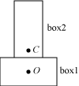

Box2D User Manual
Erin Catto, 9/16/07
Introduction
Box2D is a 2D rigid body simulator for games. You can use it in your game to make objects move in believable ways and make the world seem more interactive. From the game's point of view a physics engine is just a system for procedural animation. Rather than paying (or begging) an animator to move your actors around, you can let Sir Isaac Newton do the directing.
Box2D is written in portable C++. Most of the types defined in the engine begin with the b2 prefix. Hopefully this is sufficient to avoid name clashing with your game engine.
Prerequisites
In this manual I'll assume you are familiar with basic physics concepts, such as mass, force, torque, and impulses. If not, please first consult the many tutorials provided by Chris Hecker and David Baraff (google these names). You do not need to understand their tutorials in great detail, but they do a good job of laying out the basic concepts that will help you use Box2D.
Wikipedia is also an excellent source of physics and mathematics knowledge. In some ways it is more useful than Google, because it has carefully crafted content.
This is not a prerequisite, but if you are curious about the about the inner workings of Box2D, you can look at these slides.
Core Concepts
Box2D works with several fundamental objects. We briefly define these objects here and more details are given later in this document.
- rigid body
- A chunk of matter that is so strong that the distance between any two bits of matter on the chunk is completely constant. They are hard like a diamond. In the following discussion we use body interchangably with rigid body.
- shape
- A 2D piece of collision geometry that is fixed to a rigid body.
- constraint
- A constraint is a physical connection that removes degrees of freedom from bodies. In 2D a body has 3 degrees of freedom. If we take a body and pin it to the wall (like a pendulum) we have constrained the body to the wall. At this point the body can only rotate about the pin, so the constraint has removed 2 degrees of freedom.
- contact constraint
- A special constraint designed to prevent penetration of rigid bodies and to simulate friction. You will never create a contact constraint, they are created automatically by Box2D.
- joint
- This is a contraint used to hold two or more bodies together. Box2D supports these joint types: revolute, prismatic, distance, and more. Joints may support limits and motors.
- joint limit
- A joint limit restricts the range of motion of a joint. For example, the human elbow only allow a certain range of motion.
- joint motor
- A joint motor drives the motion of the connected bodies according to the joint's degrees of freedom. For example, you can use a motor to drive the rotation of an elbow.
- world
- A physics world is a collection of bodies, shapes, and constraints that interact together. Box2D supports the creation of multiple worlds, but this is usually not necessary.
Hello Box2D
In the distribution of Box2D is a Hello World project. The program creates a large ground box and a small dynamic box. This code does not contain any graphics, so prepare to be underwelmed. :)
Creating the World (of Box2D)
Every Box2D program begins with the creation of a world object. This is the physics hub that manages memory, objects, and simulation.
To create a world object, first we need to define a bounding box for the world. Box2D uses the bounding box to accelerate collision detection. The size isn't critical, but a better fit will improve performance. It is better to make the box too big than to make it too small.
b2AABB worldAABB;
worldAABB.minVertex.Set(-100.0f, -100.0f);
worldAABB.maxVertex.Set(100.0f, 100.0f);
Next we define the gravity vector. Yes, you can make gravity go sideways (or you could just rotate your monitor). Also we tell the world to allow bodies to sleep when they come to rest. A sleeping body doesn't require any simulation.
b2Vec2 gravity(0.0f, -10.0f);
bool doSleep = true;
Now we create the world object. Normally you would create the world on the heap and store the pointer in one of your game structures. However, creating the world on the stack works fine in this example.
b2World world(worldAABB, gravity, doSleep);
So now we have our physics world, let's start adding some stuff to it.
Creating a Ground Box
Bodies are built using the following steps:
- Define a shape with geometry, friction, density, etc.
- Define a body with a shape list, position, velocity, etc.
- Use the world object to create a body.
So now we create a ground box definition. The data in definitions are copied by Box2D, so you can create these on the stack or cook them into your game structures. This allows you to use instancing of shape data. Here is the ground box definition.
b2BoxDef groundBoxDef;
groundBoxDef.extents.Set(50.0f, 10.0f);
groundBoxDef.density = 0.0f;
The extents is just a vector of the box's half widths. So in this case the ground box is 100 units wide (x-axis) and 20 units tall (y-axis). Box2D is tuned for meters, kilograms, and seconds. So you can consider the extents to be in meters. However, it is possible to change unit systems, as discussed later in this document
The density is specified as zero. If all the shapes attached to a body have zero density, then the body is treated as static.
Now we create the ground body. For this we need a body definition. With the body definition we specify the initial position of the body and its shape list. In this case there is just one shape.
b2BodyDef groundBodyDef;
groundBodyDef.position.Set(0.0f, -10.0f);
groundBodyDef.AddShape(&groundBoxDef);
The body definition is passed onto the world object to create the ground body.
b2Body* ground = world.CreateBody(&groundBodyDef);
Again, Box2D does not keep a reference to the shape or body definitions. It copies the data into the b2Body structure.
Note that every shape must have a parent body, even shapes that are static. However, you can attach all static shapes to a single static body. This need for static bodies is done to make the Box2D code more uniform internal, reducing the number of potential bugs. A that's a good thing.
You might notice a pattern here. Most Box2D types are prefixed with b2. This is done to reduce the chance for naming conflicts with your code.
Creating a Dynamic Body
So now we have a ground body. We can use the same technique to create a dynamic body. The main difference, besides dimensions, is that the box shape's density is greater than zero. This makes Box2D treat the body as dynamic. Here is the code to create the dynamic box.
b2BoxDef boxDef;
boxDef.extents.Set(1.0f, 1.0f);
boxDef.density = 1.0f;
boxDef.friction = 0.3f;
b2BodyDef bodyDef;
bodyDef.position.Set(0.0f, 4.0f);
bodyDef.AddShape(&boxDef);
b2Body* body = world.CreateBody(&bodyDef);
That's it for initialization. We are now ready to begin simulating.
Simulating the World (of Box2D)
So we have initialized the ground box and a dynamic box. Now we are ready to set Newton loose to do his thing. We just have a couple more things to consider.
Box2D uses a bit of numerical code called an integrator. Integrators simulation the physics equations at discrete points of time. This goes along with the traditional game loop where we essentially have a flip book of movement on the screen. So we need to pick a time step for Box2D. Generally physics engines for games like a time step at least as fast as 60Hz or 1/60 seconds. You can get away with larger time steps, but you will have to be more careful about setting up the definitions for your world. We also don't like the time step to change much. So don't tie the time step to your frame rate (unless you really, really have to). If you decide to do this, drop me a note in the forums because you will need to make some modifications to Box2D. Without further ado, here is the time step.
float32 timeStep = 1.0f / 60.0f;
In addition to the integrator, Box2D also uses a larger bit of code called a constraint solver. The constraint solver solves all the constraints in the simulation, one at a time. A single constraint can be solved perfectly. However, when we solve one constraint, we slightly disrupt other constraints. To get a good solution, we need to iterate over all constraints a number of times. The suggested iteration count for Box2D is 10. You can tune this number to your liking, just keep in mind that this has a trade-off between speed and accuracy. Using fewer iterations increases performance but accuracy suffers. Likewise, using more iterations decreases performance but improves the quality of your simulation. Here is our chosen iteration count.
int32 iterations = 10;
We are now ready to begin the simulation loop. In your game the simulation loop can be merged with your game loop. In each pass through your game loop you call b2World::Step. Just one call is usually enough, depending on your frame rate and your physics time step.
The Hello World program was designed to be dead simple, so it has no graphical output. Rather that being utterly boring by producing no output, the code prints out the position and rotation of the dynamic body. Yay! Here is the simulation loop that simulates 60 time steps for a total of 1 second of simulated time.
for (int32 i = 0; i < 60; ++i)
{
world.Step(timeStep, iterations);
b2Vec2 position = body->GetOriginPosition();
float32 rotation = body->GetRotation();
printf("%4.2f %4.2f %4.2f\n", position.x, position.y, rotation);
}
Cleanup
When a world leaves scope or is deleted by calling delete on a pointer, all the memory reserved for bodies and joints is freed. This is done to make your life easier. However, you will need to nullify any body or joint pointers you have because they will become invalid.
API Design
Memory Management
A large number of the decisions about the design of Box2D were based on the need for quick and efficient use of memory. In this section I will discuss how and why Box2D allocates memory.
Box2D tends to allocate a large number of small objects (around 50-300 bytes). Using the system heap through malloc or new for small objects is inefficient and can cause fragmentation. Many of these small objects may have a short life span, such as contacts, but can persist for several time steps. So we need an allocator that can efficiently provide heap memory for these objects.
Box2D's solution is to use a small block allocator (SBA). The SBA keeps a number of growable pools of varying sizes. When a request is made for memory, the SBA returns a block of memory that best fits the requested size. When a block is freed, it is returned to the pool. Both of these operations are fast and cause little heap traffic.
Since Box2D uses a SBA, you should never new or malloc a body or joint. The only Box2D object that you allocate yourself is a b2World. The b2World class provides factories for you to create bodies and joints. This allows Box2D to use the SBA and hide the gory details from you. Never, ever, call delete or free on a body or joint.
While executing a time step, Box2D needs some temporary workspace memory. For this, it uses a stack allocator to avoid per-step heap allocations. You don't need to interact with the stack allocator, but it's good to know it's there.
Factories and Definitions
As mentioned above, memory management plays a central role in the design of the Box2D API. So when you create a b2Body or a b2Joint, you need to call the factory functions on b2World.
There are creation functions:
b2Body* b2World::CreateBody(const b2BodyDef* def)
b2Joint* b2World::CreateJoint(const b2JointDef* def)
And there are corresponding destruction functions:
void b2World::DestroyBody(b2Body* body)
void b2World::DestroyJoint(b2Joint* joint)
When you create a body or joint, you need to provide a definition or def for short. These definitions contain all the information needed to build the body or joint. By using this approach we can prevent construction errors, keep the number of function parameters small, provide sensible defaults, and reduce the number of accessors.
User Data
The
b2Shape,
b2Body, and
b2Joint classes
Dealing with C++
C++ is great for capsulation and polymorphism, but it's not so great for API design. There are always significant trade-offs when creating a C++ library.
Should we use abstract factories or the pimpl idiom? These make the API look cleaner, but they ultimately get in the way of debugging and efficient development.
Should we use private data and friends as necessary? Perhaps, but eventually the number of friends can become ridiculous.
Should we just wrap the C++ code with a C-API? Perhaps, but this is extra work and may lead to internal choices that are non-optimal. Also, C-APIs are harder to debug and maintain. A C-API also breaks encapsulation.
For Box2D I have chosen the path of least resistance. For some cases a class is well contained in its design and function, so I use public functions and private data. For everything else I use structs with all public members. These choices let me develop the code rapidly, it is easy to debug, and it creates minimal internal clutter while maintaining tight encapsulation. The downside is that you don't see a clean, simple API.
Strawman
If you don't like this API design, that's ok! You have the source code! Seriously, if you have feedback about anything related to Box2D, please drop a note in the forum.
World
The b2World class contains the bodies and joints. It manages all aspects of the simulation and allows for asynchronous queries (like AABB queries). Much of your interactions with Box2D will be with a b2World object.
Creating and Destroying a World
Creating a world is fairly simple. You need to provide a bounding box and a gravity vector.
The axis-aligned bounding box should encapsulate the world. You can improve performance by making the bounding box a bit bigger than your world, say 2x just to be safe. If you have lots of bodies that fall into the abyss, your should detect this and remove the bodies. This will improve performance and prevent floating point overflow.
To create and destory a world you need to use new and delete.
b2World* myWorld = new b2World(aabb, gravity, doSleep);
... do stuff ...
delete myWorld;
Using a World
The world class contains factories for creating and destroying bodies and joints. These factories are discussed later in the sections on bodies and joints. There are some other interactions with b2World that I will cover now.
Simulation
The world class is used to drive the simulation. You specify a time step and an iteration count. For example:
float32 timeStep = 1.0f / 60.f;
int32 iterationCount = 10;
myWorld->Step(timeStep, iterationCount);
After the time step you can examine your bodies and joints for information. Most likely you will grab the position off the bodies so that you can update your actors and render them. You can perform the time step anywhere in your game loop, but you should be aware of the order of things. For example, you must create bodies before the time step if you want to get collision results for the new bodies in that frame.
As I discussed above in the HelloWorld tutorial, you should use a fixed time step. By using a larger time step you can improve performance in low frame rate scenarios. But generally you should use a time step no larger than 1/30 seconds. A time step of 1/60 seconds will usually deliver a high quality simulation.
The iteration count controls how many times the constraint solver sweeps over all the contacts and joints in the world. More iterations always yields a better simulation. But don't trade a small time step for a large iteration count. 60Hz and 10 iterations is far better than 30Hz and 20 iterations.
Exploring the World
As mentioned before, the world is a container for bodies, joints, and contacts. You can grab the body, joint, contact lists off the world and iterate over them. For example, this code wakes up all the bodies in the world:
for (b2Body* b = myWorld->GetBodyList(); b; b = b->GetNext())
{
b->WakeUp();
}
AABB Queries
Sometimes you want to determine all the shapes in a region. The b2World class has a fast log(N) method for this using the broad phase data structure. You provide an AABB in world coordinates and b2World returns an array of all the shapes that potentially intersect the AABB. This is not exact because what the function actually does is return all the shapes whose AABBs intersect the specified AABB. For example, the following code finds all the shapes that potentially intersect a specified AABB and wakes up all of the associated bodies.
b2AABB aabb;
aabb.minVertex.Set(-1.0f, -1.0f);
aabb.maxVertex.Set(1.0f, 1.0f);
const int32 k_bufferSize = 10;
b2Shape *buffer[k_bufferSize];
int32 count = b2World->Query(aabb, buffer, k_bufferSize);
for (int32 i = 0; i < count; ++i)
{
buffer[i]->GetBody()->WakeUp();
}
Shapes
The Shape Definition
Shapes are the collision geometry attached to bodies. Shapes do not exist on their own and you cannot create a shape directly. Instead you specify a shape definition that contains all the construction data for a shape. Then you attached the shape definition to a body definition, which in turn is used to create a body. When the body is created the body definition is examined for shape definitions and the corresponding shapes are created and attached to the new body. This may seem a bit convoluted, but it really makes life easier, for me and you.
Box2D supports three types of shape definitions: circles, boxes, and convex polygons. Internally, Box2D creates a convex polygon for boxes. This simplifies the collision code. I encourage you to look at b2Shape.h for all the shape definition parameters. But don't worry, I will cover most of them here.
Local Position and Rotation
Every shape is attached to a body and you are free to attach a shape with any position and rotation. In the shape definition you specify the local position and local rotation that will be used to attach the shape to the body. This really comes in handy when you have have compound shapes.
Compounds shapes are multiple shapes that share the same body. An example is a dumbbell with a circle on each end. The following code snippet shows how to setup shape definitions for a dumbbell.
b2CircleDef circle1, circle2;
circle1.localPosition.Set(-1.0f, 0.0f);
circle2.localPosition.Set(1.0f, 0.0f);
b2BodyDef bodyDef;
bodyDef.AddShape(&circle1);
bodyDef.AddShape(&circle2);
You don't need to worry about compound shapes colliding with each other. Box2D automatically ignores collisions between shapes on the same body.
Friction and Restitution
Friction is used to make objects slide along each other realistically. Box2D supports static and dynamic friction, but uses the same parameter for both. Friction is simulated accurately in Box2D and the friction strength is proportional to the normal force (this is called Coulomb friction). The friction parameter is usually set between 0 and 1. A value of zero turns off friction and a value of one makes the friction strong. When the friction is computed between two shapes, Box2D must combine the friction parameters of the two shapes. This is done with the following formula:
float32 combinedFriction = sqrtf(shape1->friction * shape2->friction);
Restitution is used to make objects bounce. The restitution value is usually set to be between 0 and 1. Consider dropping a ball on a table. A value of zero means the ball won't bounce. This is called an inelastic collision. A value of one means the ball's velocity will be exactly reflected. This is called a perfectly elastic collision. Restitution is combined using the following formula.
float32 combinedRestitution = b2Max(shape1->restitution, shape2->restitution);
When a shape develops multiple contacts, restitution is simulated approximately. This is because Box2D uses an iterative solver. Box2D also uses inelastic collisions when the collision velocity is small. This is done to prevent jitter.
Density
Box2D computes the mass and rotational inertia of bodies using the mass distribution implied by the attached shapes. Specifying mass values directly can often lead to poorly tuned simulations. Therefore, the mass density per unit area is specified in the shape definition. You can override mass values in b2Body, but there is currently no API for this.
Collision Filtering
Collision filtering is a system for preventing collision between shapes. For example, say you make a character that rides a bicycle. You want the bicycle to collide with the terrain and the character to collide with the terrain, but you don't want the character to collide with the bicycle (because they must overlap). Box2D supports such collision filtering using categories and groups.
Box2D supports 16 collision categories. For each shape you can specify which category it belongs to. You also specify what other categories this shape can collide with. For example, you could specify in a multiplayer game that all players don't collide with each other and monsters don't collide with each other, but players and monsters should collide. This is done with masking bits. For example:
playerShapeDef.categoryBits = 0x0002;
monsterShapeDef.categoryBits = 0x0004;
playerShape.maskBits = 0x0004;
monsterShapeDef.maskBits = 0x0002;
Collision groups let you specify an integral group index. You can have all shapes with the same group index always collide (positive index) or never collide (negative index). Group indices are usually used for things that are somehow related, like the parts of a bicycle. In the following example, shape1 and shape2 always collide, but shape3 and shape4 never collide.
shape1Def.groupIndex = 2;
shape2Def.groupIndex = 2;
shape3Def.groupIndex = -8;
shape4Def.groupIndex = -8;
Collisions between shapes of different group indices are filtered according the category and mask bits. In other words, group filtering has higher precendence than category filtering.
Note that additional collision filtering occurs in Box2D. Here is a list:
- shapes on static bodies never collide
- shapes on the same body never collide
- your can optionally enable/disable collision between bodies connected by a joint
Circle Definitions
b2CircleDef extends b2ShapeDef and adds a radius.
Box Definitions
b2BoxDef extends b2ShapeDef and adds an extents vector. Assuming the y-axis is up in your game, the extents vector is defined this way:
b2BoxDef boxDef;
boxDef.extents.x = width / 2.0f;
boxDef.extents.y = height / 2.0f;
Internally, Box2D does not implement a box shape. Instead, a box definition is used to create a convex polygon.
Polygon Definitions
b2PolyDef is used to implement convex polygons. They are a bit tricky to use correctly, so please read closely. The maximum vertices is defined by b2_maxPolyVertices which is currently 8. If you need to use more vertices, you must modify b2_maxPolyVertices in b2Settings.h.
When you build a polygon definition you must specify the number of vertices you will use. The vertices must be specified in counter-clockwise (CCW) order. Also, the polygon must be convex. In other words, each vertex must point outwards to some degree. Finally, you must not overlap any vertices. Box2D will automatically close the loop.
A future version of Box2D will provide a tool to automatically create a convex polygon from a set of points, so you won't have to be so careful.
Here is an example of a polygon definition of a triangle:
b2PolyDef triangleDef;
triangleDef.vertexCount = 3;
triangleDef.vertices[0].Set(-1.0f, 0.0f);
triangleDef.vertices[1].Set(1.0f, 0.0f);
triangleDef.vertices[2].Set(0.0f, 2.0f);
The polygon vertices should generally be centered around the origin, but this is not necessary.
(Not) Creating and Destroying a Shape
We don't need to discuss shape creation or destruction because this is handled automatically by Box2D. You should never try to create or destory a shape. You should never hold onto a shape pointer, because the body may be removed somewhere else in your game code.
You can let shape definitions go out of scope because Box2D copies the data. Box2D does not hold a reference to your shape definitions. This lets you recycle shape definitions as you create bodies.
Using a Shape
There's not much to say here. You can get a shape's type, its parent body, and its world position. You can also test a point to see if it is contained within the shape. Look at b2Shape.h for details.
Bodies
The Body Definition
Before a body is created you must create a body definition (b2BodyDef). You can create a body definition on the stack or build it into your game's data structures. The choice is up to you.
Lets go over some of the key members of the body definition.
Adding Shapes
Shape definitions are added to body definitions. This way a body and its shapes are created all at once in the world's body factory. The maximum number of shapes per body is b2_maxShapesPerBody which currently has a value of 64. If you need to add mores shapes per body, then modify b2_maxShapesPerBody in b2Settings.h.
The body definition holds a pointer to the shape definition. This means the shape definition must not go out of scope while the body definition is being used. The upside is that you can reuse the same body definition to create multiple bodies and you can modify the shape definition parameters to suit without adding them to the body definition again.
b2CircleDef circleDef;
circleDef.radius = 1.0f;
b2BodyDef bodyDef;
bodyDef.AddShape(&circleDef);
Position and Rotation
The body definition gives you the chance to initialize the position of the body on creation. This has better performance than creating the body at the world origin and then moving the body.
A body has two main points of interest. The first point is the body's origin. The bodies origin is defined implicitly by the shapes it holds. Recall that shape definitions hold a local position. This local position is relative the body's origin. The second point of interest is the center of mass. The center of mass is determined from mass distribution of the attached shapes. Internally Box2D works with the center of mass position, but remembers the location of the body origin.
When you are building the body definition, you may not know where the center of mass is located. Therefore you specify the position of the body's origin. You may also specify the body's rotation, which is not affected by the position of the center of mass.
Consider a body made of two boxes. The boxes are arranged in an upside-down T configuration. The first box is placed at the body origin, so its local position and rotation are zero. The second box actually has the same extents as the first box, but it has been moved up the y-axis and rotated 90 degrees. When the body is created, Box2D determines that the center of mass is halfway between the two box centers (0, 0.75). Here is code that produces this body:
b2BoxDef box1;
box1.extents.Set(2.0f, 1.0f);
b2BoxDef box2;
box2.extents.Set(2.0f, 1.0f);
box2.localPosition.Set(0.0f, 1.5f);
box2.localRotation = b2_pi / 2.0f;
b2BodyDef bodyDef;
bodyDef.AddShape(&box1);
bodyDef.AddShape(&box2);
Now would be a good time to read this section again. It's tricky stuff that you should probably understand.
Velocity
You can set the initial velocity of the body in the body definition. This is purely for convenience because you can set a body's velocity any time you like. However, you should generally not set a body's velocity to constrain its motion. That's what joints are for.
When you are building a body definition you may not know the position of the body's center of mass, therefore the initial linear velocity is applied to the body's origin.
Sleep Parameters
Creating a Body
Box2D does not keep a reference to the body definition or any of the data it holds (except possibly user data void pointers).
b2Body* body = myWorld->CreateBody(&bodyDef);
... do stuff ...
myWorld->DestroyBody(body);
body = NULL;
Using a Body
Joints
The Joint Definition
Creating and Destroying a Joint
Using a Joint
Orphaned Joints
Joint Types
Distance Joint
Revolute Joint
Prismatic Joint
Mouse Joint
Behind the Scenes
- Collision System
-- Incremental sort and sweep
-- Polygon collision
- Dynamics
-- Body-joint-contact graph
-- Islands
-- SI solver
-- NSI solver
Settings
- Units
- Collision settings
- Dynamics settings
References
Open Issues